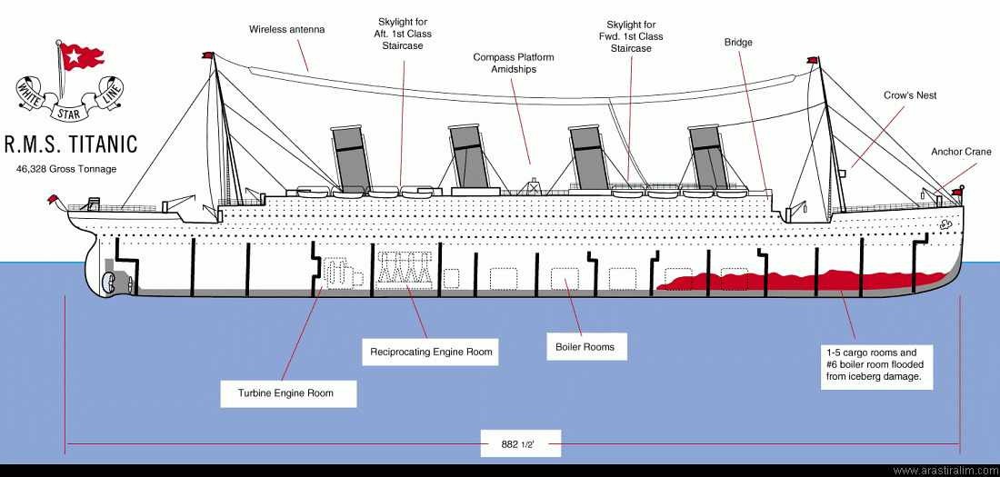

.jpg)

Geminin özellikleri:
Bandırası : ENGLAND / Liverpool
Şirket : White Star Line Company
Gemi Adı : Royal Mail Ship (R.M.S)TITANIC
Uzunluk : 269 metre
Eni : 28 metre
Derinlik : 29 metre
Yükseklik : 63 metre (omurgadan direğin tepesine kadar.)
Ağırlığı: 66.000 ton
Hız: 21 Knot (39 km/s - 24 mph) azami 23 Knot (43 km/s)
Yolcu K. : 3.547 kişi
Mürettebat : 910 kişi
Bandırası : ENGLAND / Liverpool
Şirket : White Star Line Company
Gemi Adı : Royal Mail Ship (R.M.S)TITANIC
Uzunluk : 269 metre
Eni : 28 metre
Derinlik : 29 metre
Yükseklik : 63 metre (omurgadan direğin tepesine kadar.)
Ağırlığı: 66.000 ton
Hız: 21 Knot (39 km/s - 24 mph) azami 23 Knot (43 km/s)
Yolcu K. : 3.547 kişi
Mürettebat : 910 kişi
Gemi'nin bulunduğu zamanda, Titanic lüks, zenginlik ve ihtişam konusunda tüm rakiplerinin üzerindeydi. Gemi'de standart olarak ana güvertede yüzme havuzu, spor salonu, türk hamamı, hem birinci sınıf hem de ikinci sınıfta kütüphane, tenis kortu sunulmaktaydı.. Birinci sınıf ortak odaları çok özel ağaç işlemeciliği, pahalı mobilyalar ve diğer dekorasyonlar ile süslenmişti. Buna ilave olarak 'Café Parisien' birinci sınıf yolculara çardak biçiminde dekorasyon ile süslenmiş güneşli veranda altında mutfak hizmeti vermekteydi.Gemi bulunduğu zamana göre gelişmiş teknolojik özellikler ile donatılmıştı. Buhar jeneratörleri tarafından desteklenen geniş bir elektrik altyapısı vardı, elektrik kabloları aynı zamanda elektrik lambalarını besliyordu. Gemi aynı zamanda iki Marconi radyo sistemi ile de gurur duymaktaydı. Vardiye halinde çalışan operatörler tarafından işletilen 1500 watt'lik sistem sabit bir iletişim ve bir çok yolcu mesajlarinin aynı anda transferine olanak sağlamaktaydı